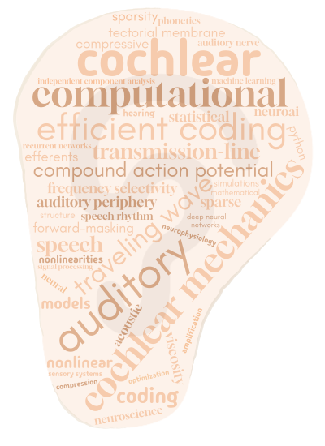

<div class="maindiv">

<!--<p style="float:right; margin-left:10px"></p>-->

    <div class="container">
      <div class="image">
        
      </div>
      <div class="mytext">
<p><b>Hello 👋,</b> <br>
I am François Deloche, a postdoctoral researcher currently at the Hearing Research Centre @ Macquarie University (Sydney). 
<br><br>
I develop novel techniques that use the biophysical signals from our ear to investigate cochlear function and/or support clinical applications. These include otoacoustic emissions and the compound action potential. I also conduct basic research on mathematical/computational models of the cochlea and peripheral auditory processing.
<br>
<p style="color:#aa7c5aff" >← Some keywords for my research <span style="color:#aaaaaa">(done with <a href="https://www.wordclouds.com/">wordclouds.com</a>)</span></p>

     </div>
</div>

</div>
